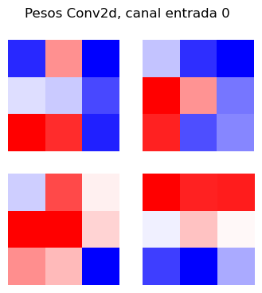
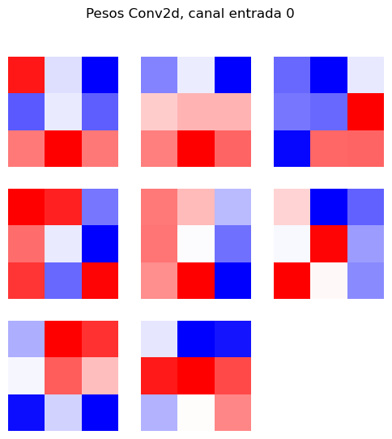

Práctico 4: Redes convolucionales#
En este cuaderno vamos a adentrarnos un poco en uno de los modelos más usados en IA, que tiene una inspiración fuerte en la cognición visual (algo que van a ver en clases siguientes) y vamos a ver cómo procede el entrenamiento y qué descubre la red.
Configuración#
import math
import numpy as np
import matplotlib.pyplot as plt
import torch
import torch.nn as nn
import torch.nn.functional as F
from torch.utils.data import DataLoader, random_split
from torchvision import datasets, transforms
import ipywidgets as widgets
if torch.cuda.is_available():
device = torch.device("cuda")
elif hasattr(torch.backends, "mps") and torch.backends.mps.is_available():
device = torch.device("mps")
else:
device = torch.device("cpu")
print("Usando device:", device)
Usando device: mps
Funciones utilitarias#
def train_net(model, loader, optimizer, criterion):
model.train()
total_loss, correct, total = 0.0, 0, 0
for x, y in loader:
x, y = x.to(device), y.to(device)
optimizer.zero_grad()
logits = model(x)
loss = criterion(logits, y)
loss.backward()
optimizer.step()
total_loss += loss.item() * x.size(0)
preds = logits.argmax(dim=1)
correct += (preds == y).sum().item()
total += x.size(0)
return total_loss/total, correct/total
@torch.no_grad()
def eval_net(model, loader, criterion):
model.eval()
total_loss, correct, total = 0.0, 0, 0
for x, y in loader:
x, y = x.to(device), y.to(device)
logits = model(x)
loss = criterion(logits, y)
total_loss += loss.item() * x.size(0)
preds = logits.argmax(dim=1)
correct += (preds == y).sum().item()
total += x.size(0)
return total_loss/total, correct/total
Funciones de graficado#
def visualizar_activaciones(activations, layer):
act = activations[layer][0]
n = act.shape[0]
cols = int(math.ceil(math.sqrt(n)))
rows = int(math.ceil(n / cols))
fig, axes = plt.subplots(rows, cols, figsize=(2*cols, 2*rows))
axes = axes.flatten()
for i in range(n):
axes[i].imshow(act[i], cmap="gray")
axes[i].axis("off")
for j in range(n, len(axes)):
axes[j].axis("off")
plt.suptitle(f"Activaciones en {layer}")
plt.show()
def visualizar_barplot(activations, layer):
act = activations[layer][0].numpy()
n = len(act)
plt.figure(figsize=(10,4))
plt.bar(np.arange(n), act)
plt.title(f"Activaciones en {layer} ({n} unidades)")
plt.xlabel("Unidad")
plt.ylabel("Valor de activación")
plt.show()
def visualizar_pesos(conv_layer, in_channel=0, max_plots=64):
W = conv_layer.weight.detach().cpu() # (out_ch, in_ch, kH, kW)
n = min(W.shape[0], max_plots)
cols = int(math.ceil(math.sqrt(n)))
rows = int(math.ceil(n / cols))
fig, axes = plt.subplots(rows, cols, figsize=(2*cols, 2*rows))
axes = axes.flatten()
for i in range(n):
ker = W[i, in_channel].numpy()
axes[i].imshow(ker, cmap="bwr") # bwr: azul negativo, rojo positivo
axes[i].axis("off")
for j in range(n, len(axes)):
axes[j].axis("off")
plt.suptitle(f"Pesos {conv_layer.__class__.__name__}, canal entrada {in_channel}")
plt.show()
Dataset: MNIST#
Usamos torchvision.datasets.MNIST con una transformación mínima (ToTensor) que deja las imágenes en rango [0, 1] para cargar el con junto MNIST.
transform = transforms.ToTensor()
train_full = datasets.MNIST(root="./data", train=True, download=True, transform=transform)
test_ds = datasets.MNIST(root="./data", train=False, download=True, transform=transform)
len(train_full), len(test_ds), train_full[0][0].shape
(60000, 10000, torch.Size([1, 28, 28]))
# Separar un pequeño conjunto para la validación
train_size = int(len(train_full) * 0.9)
val_size = len(train_full) - train_size
train_ds, val_ds = random_split(train_full, [train_size, val_size])
# Instanciar clases utilitarias de PyTorch que nos permiten leer la carpeta data
batch_size = 64
train_loader = DataLoader(train_ds, batch_size=batch_size, shuffle=True)
val_loader = DataLoader(val_ds, batch_size=batch_size, shuffle=False)
# Imprimimos la forma del primer lote
batch = next(iter(train_loader))
batch[0].shape, batch[1].shape
(torch.Size([64, 1, 28, 28]), torch.Size([64]))
Nuestra primera red convolucional#
Vamos a tratar de resolver este problema usando redes convolucionales.
Primero, tenemos que definir la «arquitectura» de la red:
class SimpleCNN(nn.Module):
def __init__(self):
super().__init__()
self.conv1 = nn.Conv2d(1, 4, kernel_size=3, padding=1)
self.pool1 = nn.MaxPool2d(2, 2)
self.conv2 = nn.Conv2d(4, 8, kernel_size=3, padding=1)
self.pool2 = nn.MaxPool2d(2, 2)
self.fc1 = nn.Linear(8 * 7 * 7, 8)
self.fc2 = nn.Linear(8, 10)
def forward(self, x):
x = F.relu(self.conv1(x))
x = self.pool1(x)
x = F.relu(self.conv2(x))
x = self.pool2(x)
x = x.view(x.size(0), -1)
x = F.relu(self.fc1(x))
x = self.fc2(x)
return x
A continuación, la entrenamos. Probá aumentando el número de épocas a 5.
# Instanciamos la red
cnn = SimpleCNN().to(device)
# Especificamos el optimizador
optimizer_cnn = torch.optim.Adam(cnn.parameters(), lr=1e-3)
# Especificamos el criterio para medir la pérdida
criterion = nn.CrossEntropyLoss()
# Reproducibilidad
torch.manual_seed(123)
np.random.seed(123)
# Iteramos sobre una cierta cantidad de épocas
tmax = 2
for ep in range(1, tmax+1):
# Entrenamos a la red en el conjunto de entrenamiento
tr_loss, tr_acc = train_net(cnn, train_loader, optimizer_cnn, criterion)
# Evaluamos en el conjunto de evaluación
va_loss, va_acc = eval_net(cnn, val_loader, criterion)
print(f"Época {ep:02d} | Precisión={va_acc:.4f}")
Época 01 | Precisión=0.9063
Época 02 | Precisión=0.9312
Efecutá la celda siguiente para ver las activaciones de las diversas capas de la red ya entrenada. Tené en cuenta que:
conv1es una capa de convolución con una salida de 4 dimensiones y con un kernel de 3x3. Esto produce 4 imagenes un poquito mas chicas que la anterior, de 26x26, ya que la convolucion, si no se le aplica ninguna técnica de padding, siempre va a devolver una salida más chica que la entrada.pool1es una capa de max pooling de \(2 \times 2\). Esto significa que va a comprimir la imagen a la mitad quedandose sólo con el máximo valor encontrado en cada ventana.conv2es otra capa de convolución con una salida de 8 dimensiones y con un kernel de 3x3. Esto produce 8 imagenes un poquito mas chicas que la anterior, esta vez de \(11 \times 11\).pool2es otra capa de max pooling de \(2 \times 2\). Esto significa que va a comprimir nuevamente la imagen a la mitad quedandose sólo con el máximo valor encontrado en cada ventana.fc1es una capa de red neuronal densa de 8 nodos conectados a todas las entradas (la salida depool2) y a todas las salidas (fc2).fc2es una capa de red neuronal densa de 10 nodos conectados a todas las entradas (la salida depool2). Codifican la salida esperada.
# Forma en que PyTorch nos permite visualizar las activaciones de las capas ocultas
activations = {}
def make_hook(name):
def _hook(m, i, o): activations[name] = o.detach().cpu()
return _hook
hooks = [
cnn.conv1.register_forward_hook(make_hook('conv1')),
cnn.pool1.register_forward_hook(make_hook('pool1')),
cnn.conv2.register_forward_hook(make_hook('conv2')),
cnn.pool2.register_forward_hook(make_hook('pool2')),
cnn.fc1.register_forward_hook(make_hook('fc1')),
cnn.fc2.register_forward_hook(make_hook('fc2')),
]
@widgets.interact(i=(0,len(test_ds)-1, 1), layer=['conv1', 'pool1', 'conv2', 'pool2', 'fc1', 'fc2'])
def visualize(i, layer):
Xi, Yi = test_ds[i]
activations.clear()
_ = cnn(Xi.unsqueeze(0).to(device))
if layer == 'fc1' or layer == 'fc2':
visualizar_barplot(activations, layer)
else:
visualizar_activaciones(activations, layer)
Efecutá la celda siguiente para ver los pesos de las dos capas de convolución que aprendió la red.
visualizar_pesos(cnn.conv1, in_channel=0)
visualizar_pesos(cnn.conv2, in_channel=0)

